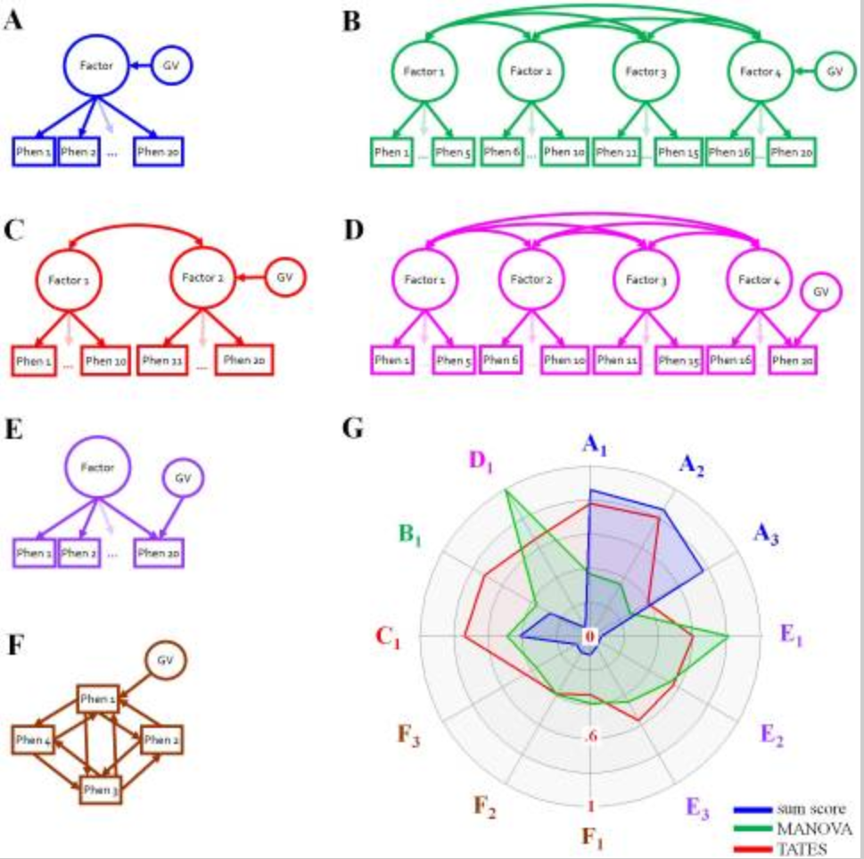
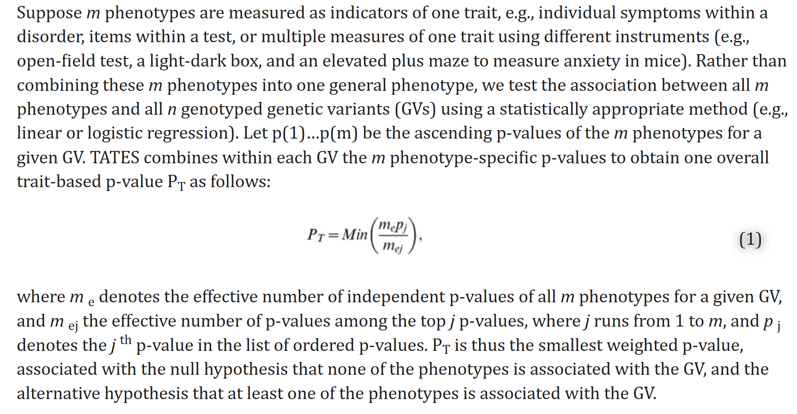
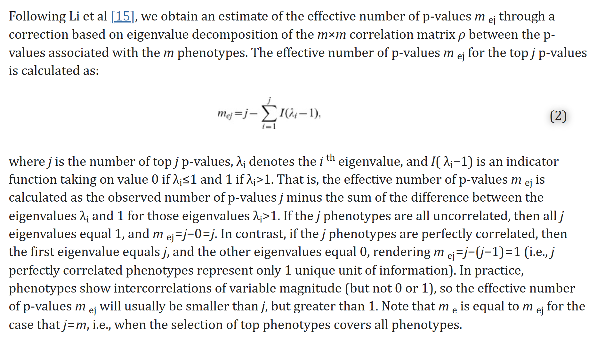

Last updated: 2024-08-22
Checks: 7 0
Knit directory: Getting_started/
This reproducible R Markdown analysis was created with workflowr (version 1.7.1). The Checks tab describes the reproducibility checks that were applied when the results were created. The Past versions tab lists the development history.
Great! Since the R Markdown file has been committed to the Git repository, you know the exact version of the code that produced these results.
Great job! The global environment was empty. Objects defined in the global environment can affect the analysis in your R Markdown file in unknown ways. For reproduciblity it’s best to always run the code in an empty environment.
The command set.seed(20240712) was run prior to running the code in the R Markdown file. Setting a seed ensures that any results that rely on randomness, e.g. subsampling or permutations, are reproducible.
Great job! Recording the operating system, R version, and package versions is critical for reproducibility.
Nice! There were no cached chunks for this analysis, so you can be confident that you successfully produced the results during this run.
Great job! Using relative paths to the files within your workflowr project makes it easier to run your code on other machines.
Great! You are using Git for version control. Tracking code development and connecting the code version to the results is critical for reproducibility.
The results in this page were generated with repository version 307dbfa. See the Past versions tab to see a history of the changes made to the R Markdown and HTML files.
Note that you need to be careful to ensure that all relevant files for the analysis have been committed to Git prior to generating the results (you can use wflow_publish or wflow_git_commit). workflowr only checks the R Markdown file, but you know if there are other scripts or data files that it depends on. Below is the status of the Git repository when the results were generated:
Ignored files:
Ignored: .Rhistory
Ignored: .Rproj.user/
Ignored: analysis/job-info.err
Ignored: analysis/job-info.out
Ignored: analysis/run.sh
Untracked files:
Untracked: analysis/sceptre_singleton.Rmd
Untracked: analysis/sceptre_threshold.Rmd
Untracked: code/create_grna_target_data_frame.Rmd
Untracked: code/try_Knit.Rmd
Untracked: data/GDO_threshold/
Untracked: data/STINGseq-v1_GDO/
Untracked: data/STINGseq-v1_HTO/
Untracked: data/STINGseq-v1_cDNA/
Untracked: output/sceptre_outputs/trans_mixture.txt
Untracked: output/sceptre_outputs_cis/
Untracked: output/sceptre_outputs_cis_singleton/
Untracked: output/sceptre_outputs_cis_threshold/
Untracked: output/sceptre_outputs_cis_threshold5/
Untracked: output/sceptre_outputs_trans_omit_NTC3_12/
Untracked: output/sceptre_outputs_trans_threshold/
Untracked: output/sceptre_outputs_trans_threshold_omit_NTC3_12/
Untracked: output/trans_singleton_threshold5/
Untracked: output/trans_singleton_threshold_author/
Untracked: output/trans_singleton_threshold_author_omit/
Untracked: output/try_rcc/
Unstaged changes:
Modified: .gitignore
Deleted: analysis/create_grna_target_data_frame.Rmd
Modified: analysis/qqplot.Rmd
Modified: analysis/sceptre.Rmd
Modified: analysis/sceptre_example.Rmd
Deleted: analysis/seurat_example.Rmd
Modified: analysis/summary.Rmd
Deleted: analysis/try_Knit.Rmd
Deleted: analysis/try_rcc.Rmd
Deleted: output/sceptre_outputs/analysis_summary.txt
Note that any generated files, e.g. HTML, png, CSS, etc., are not included in this status report because it is ok for generated content to have uncommitted changes.
These are the previous versions of the repository in which changes were made to the R Markdown (analysis/TATES.Rmd) and HTML (docs/TATES.html) files. If you’ve configured a remote Git repository (see ?wflow_git_remote), click on the hyperlinks in the table below to view the files as they were in that past version.
| File | Version | Author | Date | Message |
|---|---|---|---|---|
| Rmd | 307dbfa | jliucx | 2024-08-22 | add TATES analysis |
As GWAS analyses are generally univariate in nature, multivariate phenotypic information is usually reduced to a single composite score. This means that researchers, prior to analyses, often reduce available, originally multivariate, phenotypic information (e.g., information on multiple questions from a diagnostic interview or questionnaire, or multiple items in a test) to a single phenotypic composite score, such as a continuous sum score or binary case-control status. This practice often results in loss of statistical power to detect causal variants.
On the other hand, GV effect could be either on the latent factor, or specific to one of the phenotype. And the coreration between factor and phenotype, factor and factor, phenotype and phenotype, is unknown. Univariate conceptualisations like sum scores and case-control status result in substantial loss of power to detect underlying GVs in all the scenarios except scenario A.

| Version | Author | Date |
|---|---|---|
| 307dbfa | jliucx | 2024-08-22 |
For each component of a multivariate trait, TATES combines p-values obtained in standard univariate GWAS to acquire one trait-based p-value, while correcting for correlations between components.
For individual phenotypes characterizing a trait (e.g., items or symptoms), TATES combines the p-values obtained in standard univariate GWAS to arrive at a global trait-based p-value PT, while correcting for the observed correlational structure between the phenotypes. Here we show that TATES has correct false positive (type-I error) rate, and that TATES picks up both phenotype-specific genetic effects as well as genetic effects that are common to multiple correlated phenotypes. Through extensive simulations, probing a wide variety of genotype-phenotype models, we demonstrate under which circumstances TATES outperforms analyses based on sum scores and MANOVA/MultiPhen with respect to the statistical power to detect causal GVs.

| Version | Author | Date |
|---|---|---|
| 307dbfa | jliucx | 2024-08-22 |

| Version | Author | Date |
|---|---|---|
| 307dbfa | jliucx | 2024-08-22 |
Approximation p-value correlation matrix
The m×m correlation matrix ρ between the p-values is not observed in practice. We used simulation to show that matrix ρ can be accurately approximated through the m×m correlation matrix r between the phenotypes. We simulated 55 continuous standard normally distributed phenotypes whose intercorrelations ranged between −.90 and .90, and a GV (MAF = .5) that was simulated to be unrelated to the 55 phenotypes. The association between the GV and all phenotypes was tested, yielding 55 p-values, and this simulation was run 10,000 times. We then calculated, across the 10,000 simulations, the mean pair-wise correlations between the 55 phenotypes (i.e., (55*55−55)/2 = 1485 correlations), and the mean pair-wise correlations between the p-values. Regressing the vector of correlations between the p-values on the vector of correlations between the phenotypes, we obtain the 6th order polynomial ρ = −0.0008−0.0023r+0.6226r 2+0.0149r 3+0.1095r 4−0.0219r 5+0.2179r 6 (coefficient of determination R2 = .992), allowing accurate approximation of the correlations between the p-values from the observed correlations between the phenotypes. The thus obtained matrix ρ is subjected to the eigenvalue decomposition.
MultiPhen uses ordinal regression to regress 0/1/2-coded GVs on a collection of phenotypes of any measurement nature (i.e., continuous, dichotomous, ordinal), and applies one omnibus test to test whether all regression weights in the model are together significantly different from zero. MultiPhen has been shown to outperform MANOVA when minor allele frequency (MAF) is low and the phenotypes are case-control status or non-normally distributed continuous variables. Under most circumstances, however, MultiPhen and MANOVA yield very similar results in terms of power to detect causal GVs. A drawback of these multivariate methods is that their power depends on the specific configuration of phenotypic correlations and on the location of the GV effect (e.g., on the latent dimension, or specific to one of many correlated phenotypes). For instance, when the ideal model holds, MANOVA is decidedly less powerful than univariate analyses based on sum scores. MANOVA, however, easily outperforms the sum score approach when the GV affects only one of multiple strongly correlated variables.
sessionInfo()R version 4.1.0 (2021-05-18)
Platform: x86_64-pc-linux-gnu (64-bit)
Running under: CentOS Linux 8
Matrix products: default
BLAS/LAPACK: /software/openblas-0.2.19-el8-x86_64/lib/libopenblas_haswellp-r0.2.19.so
locale:
[1] LC_CTYPE=en_US.UTF-8 LC_NUMERIC=C LC_TIME=C
[4] LC_COLLATE=C LC_MONETARY=C LC_MESSAGES=C
[7] LC_PAPER=C LC_NAME=C LC_ADDRESS=C
[10] LC_TELEPHONE=C LC_MEASUREMENT=C LC_IDENTIFICATION=C
attached base packages:
[1] stats graphics grDevices utils datasets methods base
other attached packages:
[1] workflowr_1.7.1
loaded via a namespace (and not attached):
[1] Rcpp_1.0.12 highr_0.11 compiler_4.1.0 pillar_1.9.0
[5] bslib_0.7.0 later_1.2.0 git2r_0.32.0 jquerylib_0.1.4
[9] tools_4.1.0 getPass_0.2-2 digest_0.6.33 jsonlite_1.8.7
[13] evaluate_0.23 lifecycle_1.0.4 tibble_3.2.1 pkgconfig_2.0.3
[17] rlang_1.1.2 cli_3.6.1 rstudioapi_0.15.0 yaml_2.2.1
[21] xfun_0.45 fastmap_1.1.1 httr_1.4.2 stringr_1.5.1
[25] knitr_1.48 fs_1.6.3 vctrs_0.6.4 sass_0.4.9
[29] rprojroot_2.0.4 glue_1.6.2 R6_2.5.1 processx_3.8.4
[33] fansi_1.0.5 rmarkdown_2.27 callr_3.7.6 magrittr_2.0.3
[37] whisker_0.4.1 ps_1.7.5 promises_1.2.0.1 htmltools_0.5.8.1
[41] httpuv_1.6.1 utf8_1.2.1 stringi_1.6.2 cachem_1.0.8